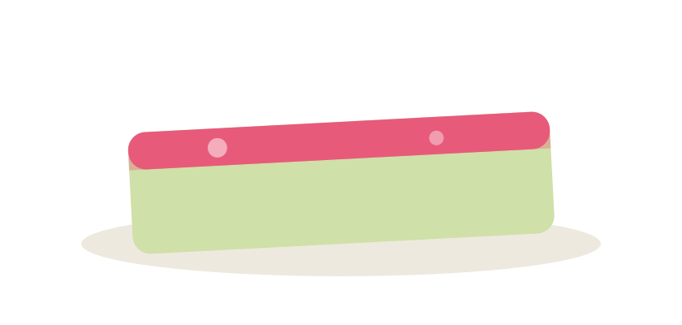
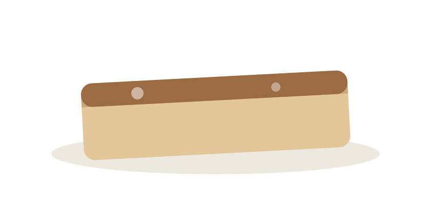
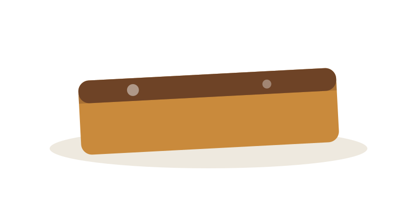
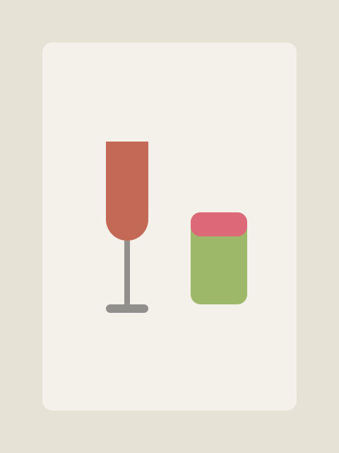
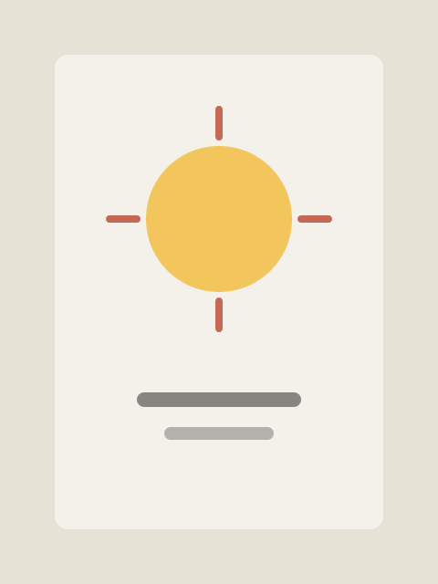

( 01 )
菓子職人が
描く羊羹
この羊羹は、洋菓子の発想を取り入れながら、餡と寒天という和の素材で仕立てた新しい羊羹です。
伝統の型にとらわれず、旬の食材と自由な配合で、ひと口ごとに驚きのある味わいを目指しました。



ようかん
ようかんの3つの特徴
( 01 )
この羊羹は、洋菓子の発想を取り入れながら、餡と寒天という和の素材で仕立てた新しい羊羹です。
伝統の型にとらわれず、旬の食材と自由な配合で、ひと口ごとに驚きのある味わいを目指しました。
( 02 )
お茶やコーヒーと合わせるのはもちろん、ワインやウイスキーとも好相性。
軽やかな口どけで重たくならないので、食後やくつろぎの時間のデザートとしても楽しめます。

( 03 )
季節のようかんは、その時季だけの限定仕立て。
同じ味は二度とつくらない、一度きりの出会いです。
移ろう季節に合わせて、新しいフレーバーをお届けします。
